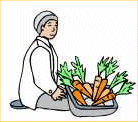
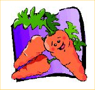

|  | in Merry Old England |
 |
We're buying carrots, and we've found two sellers who have vegetables we like. The first will sell us four pounds and six ounces for a price of two pounds seven shillings and three pence.
The second grower had a bigger crop. He asks for four pounds thirteen shillings and ten pence, and in return will give us nine pounds fourteen ounces of his carrots.
Which batch of carrots should we buy, to pay the least amount per pound?
Solving hints you should know:
(A pound of weight is sixteen ounces. A pound of money in long ago England is exactly 20 shillings, and a shilling is twelve pence. So don't confuse the pounds of weight that measure fatness with the pounds that mark expense.)
This problem came from The Gnarly Gnews, a humorous, bi-monthly math newsletter, published by the SMP Company, PO Box 1563, Santa Fe, NM 87504, Copyright 2002 by Montgomery Phister, Jr. It appeared in the Jan-Feb issue for 2003.
| Comments? Send e-mail. | Back to top | Go back to Home Page | Go back to Contents |